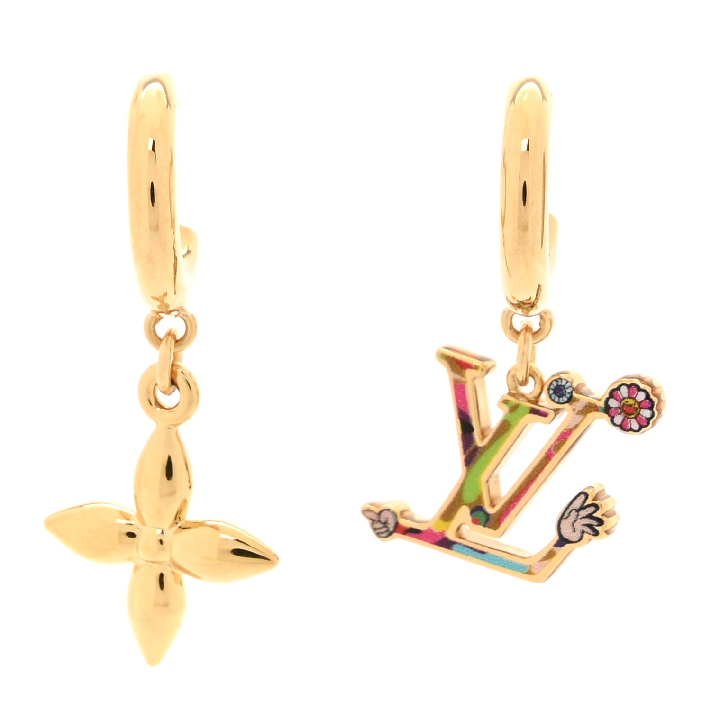
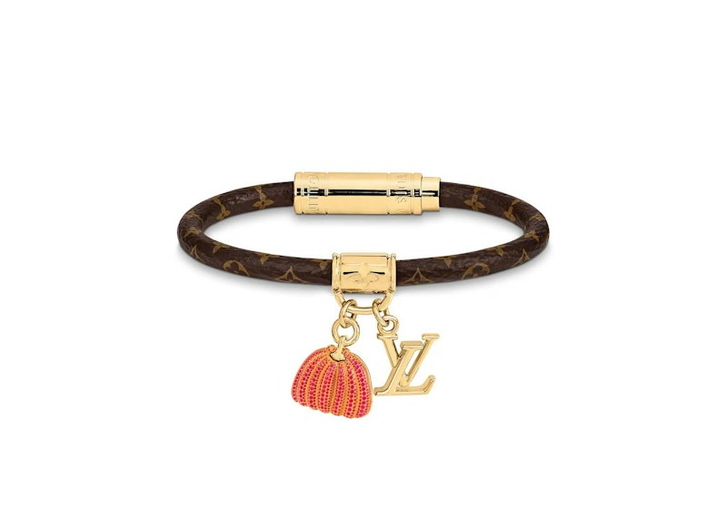

2026 / 2026 Monogram 130th-anniversary capsule
2026 / 2026 Monogram 130th-anniversary capsuleLouis Vuitton
Speedy Bandoulière 20 — Monogram Origine, Green Asnières
Pastel green gives the Speedy’s compact travel shape a fresh register.
US$2,850Explore ↗
Official US retail · checked 19 Oct 2026THE HOUSE / 法国 / EST. 1854
路易威登 — 旅行的形状，也可以很日常
如果把路易威登的故事摊开，起点是一只旅行硬箱。十九世纪的出行方式不断变化，箱子需要经得住搬运，也需要更方便堆叠。品牌从木工结构、帆布覆面与锁具出发，慢慢写出一套与移动有关的设计语言。棋盘格和字母花纹让人一眼认出它，但图案之外，提手的位置、包底的宽度与收纳方式同样值得留意。Speedy 把旅行袋的容量缩进城市生活，其他作品则继续回应不同的出行节奏。理解这段历史，日常手袋就不再只是一个标志，而是一件关于如何带着生活出门的物品。
A FEW CHAPTERS IN TIME
路易·威登在巴黎开设首店
在阿涅尔建立工坊
首家海外门店在伦敦开业
Damier 棋盘格帆布推出
Georges Vuitton 创作 Monogram 图案
Speedy 的前身 Express 出现
IN THE MUSELUX CATALOG
7 项收录：6 条年度精选、1 个经典设计词条。年度卡片保留入选年份和美元价格口径。
2026 / 2026 Monogram 130th-anniversary capsulePastel green gives the Speedy’s compact travel shape a fresh register.
 2024 / Spring 2024 special capsule
2024 / Spring 2024 special capsuleTyler, the Creator’s Chocolate Craggy Monogram gives the compact Keepall a playful, deliberately irregular rhythm.
 2023 / January 2023 · Louis Vuitton x Yayoi Kusama artist capsule
2023 / January 2023 · Louis Vuitton x Yayoi Kusama artist capsuleKusama's Painted Dots give the Neverfull a second rhythm over its familiar Monogram.
波士顿手袋
把旅行的容量，缩进城市的步伐。
探索设计
2025 / 2025 artist collaboration capsuleThe Superflat earrings use asymmetry to keep the collaboration’s imagery lively.

2023 / Artist capsule · Yayoi K usama 2023A slim Monogram loop becomes the quiet support for two small hanging forms: a bright pumpkin and the familiar LV initials.
KEEP READING